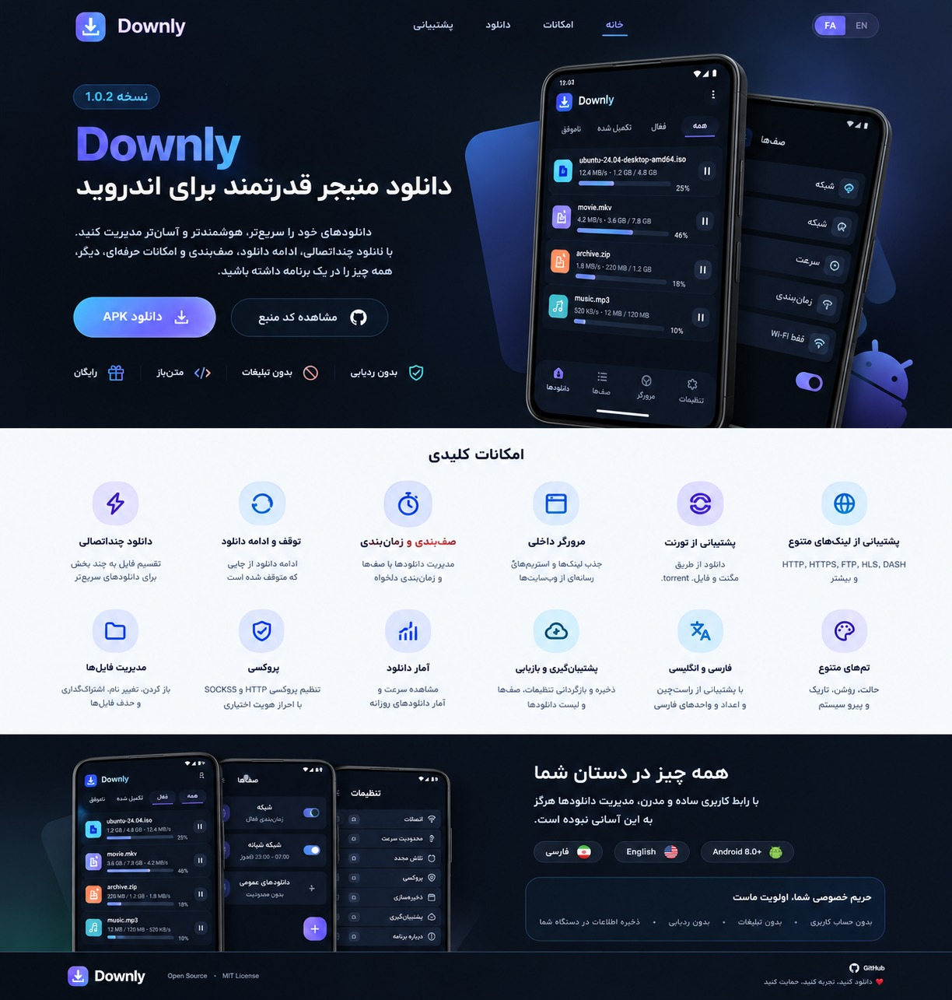

دانلود چنداتصالی
تقسیم فایل به چند بخش برای استفاده بهتر از اتصال شبکه، در سرورهای سازگار.
01یک دانلود منیجر قدرتمند برای اندروید؛ برای دانلودهای سریعتر، مدیریت سادهتر و کنترل بیشتر، بدون تبلیغات اضافه.

ابزارهایی که برای مدیریت دانلودها لازم داری، در یک رابط کاربری منظم و یکپارچه.
تقسیم فایل به چند بخش برای استفاده بهتر از اتصال شبکه، در سرورهای سازگار.
01دانلود را متوقف کن و در صورت پشتیبانی سرور، بعداً از همانجا ادامه بده.
02دانلودها را مرتب کن و زمان اجرای آنها را مدیریت کن.
03لینکها را باز کن و دانلودهای سازگار را از داخل برنامه مدیریت کن.
04پشتیبانی از HTTP، HTTPS، FTP و فرمتها و روشهای منتخب دیگر.
05فایلها را پیدا کن، دستهبندی کن و دانلودهای قبلی را راحتتر مدیریت کن.
06صف دانلود، مدیریت همزمان چند فایل، تنظیمات شبکه و گزینههای کاربردی کمک میکنند همهچیز مرتب بماند.
Downly بهعنوان پروژهای متنباز ارائه میشود. کد منبع را بررسی کن و با توجه به مجوزها و رفتار نسخهای که نصب میکنی، تصمیم بگیر.
نسخه منتشرشده را ببین، تغییرات را بخوان و فایل نصب را از بخش Releases دریافت کن.
سازگاری اعلامشده پروژه: Android 8.0 و بالاتر · پیش از نصب، توضیحات همان نسخه را بخوانید.